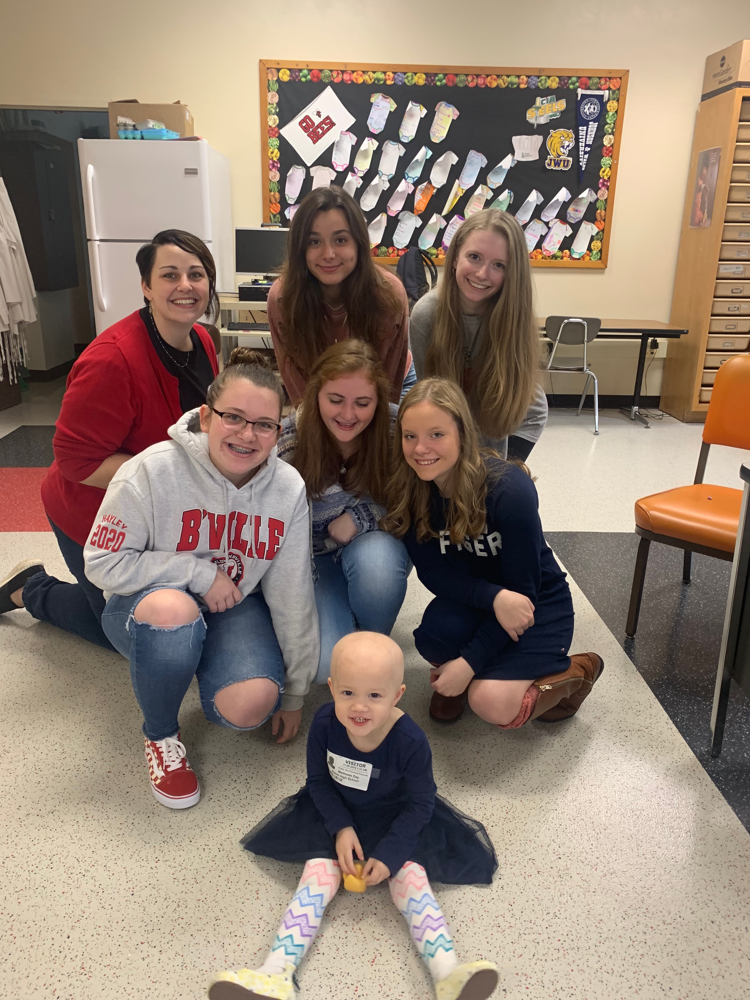

FCCLA has been such a wonderful and fulfilling experience for me during high school. During the summers, I spend a few hours every week working on the garden we've created on our school campus. We grow all sorts of fruits and vegetables that we can then donate to a local food pantry. I'm also able to implement a technological element into the work we do by helping create a hydroponic system so that the plants automatically get watered by a creek nearby.
In our community, there is a little girl named Rosie who sadly has been diagnosed with cancer. To help Rosie and her family make ends meet, we fundraise money and cook home-made meals every week for her and her family to eat. This way, they have one less stress on them during this extremely difficult time. This club has been a real eye-opener to me on all the ways that I can make a positive impact on my community. Even the little things make a big difference!
